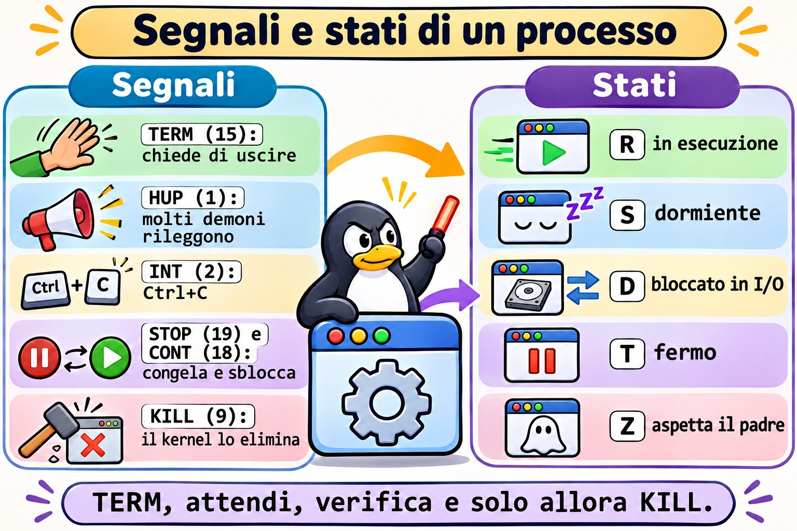
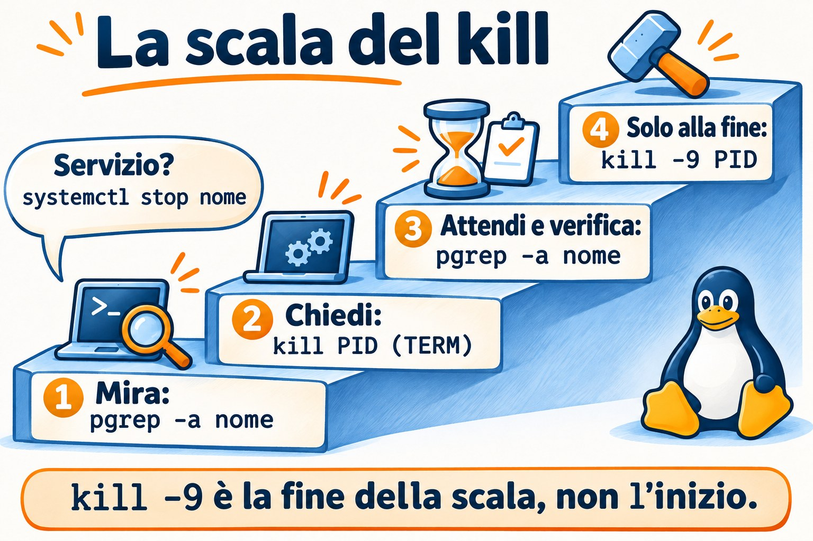
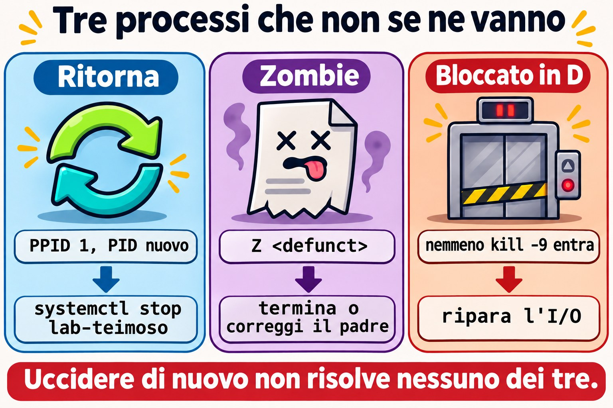

Lezione 7.1 · Processi e segnali
Nella lezione 2.3 hai imparato a elencare un processo e a terminarlo. Ora arriva ciò che separa chi risolve da chi riavvia: leggere lo stato di ogni processo, scegliere il segnale giusto e capire perché alcuni processi non muoiono, o tornano subito dopo essere stati uccisi.
Il cuore di questa lezione: leggere
psetopsenza farsi ingannare; spiegare gli stati R, S, D, T e Z; usare TERM, HUP, STOP, CONT e KILL nell'ordine giusto; colpire con precisione usandopgrepepkill; scoprire da quale servizio arriva un PID. Il resto è approfondimento.
| Scheda | |
|---|---|
| Modulo | M7 · Processi e prestazioni, lezione 1 di 3 |
| Quando | Settimana 11 |
| Alla fine | Termini il processo giusto nel modo giusto e spieghi perché un processo non muore |
| Prerequisiti | Lezioni 2.3 e 4.2 |
| Durata | circa 2h |
| Snapshot | m7a1-inicio e m7a1-fim su rocky-lab e debian-lab |
1 · Riscaldamento
Rispondi prima di leggere.
- Qual è la differenza tra
kill PIDekill -9 PID? Quale dei due il programma riesce a sentire? - Per lo stesso processo,
psmostra il 75% di CPU etopmostra lo 0%. Possono avere ragione entrambi? - Un processo compare con stato
Z.kill -9risolve?
2 · Perché conta
| La richiesta | La risposta sbagliata | Cosa provoca |
|---|---|---|
| "Il database è lento, uccidi il processo" | kill -9 subito | Il database non scrive ciò che aveva in memoria e il prossimo avvio passa il tempo a recuperare i dati |
| "Ho ucciso il processo ed è tornato" | Ucciderlo di nuovo, in loop | A rilanciarlo è systemd. La cosa giusta è fermare il servizio |
| "Ci sono 40 zombie sul server" | kill -9 su tutti | Lo zombie è già morto. Chi ha bisogno di attenzione è il padre |
| "Il carico è a 40 e la CPU è ferma" | Riavviare il server | I processi sono bloccati sul disco o su NFS. La causa resta lì anche dopo il boot |
| "Volevo solo ricaricare la configurazione" | systemctl restart nell'ora di punta | Fa cadere le connessioni, quando bastava un reload (HUP) |
3 · Modello mentale
Un processo è un dipendente, e un segnale è un biglietto che gli viene consegnato. TERM dice "chiudi quello che stai facendo e vai via", e lui può mettere in ordine la scrivania prima. HUP dice "rileggi le istruzioni". STOP e KILL non sono biglietti: a intervenire è il kernel, che congela o porta via il dipendente senza chiedere. Uno zombie è la scheda di chi è già uscito, ferma sulla scrivania del capo finché lui non la firma. Chi è in D è nell'ascensore bloccato: nessun biglietto arriva fin lì finché la porta non si apre.
kill -TERM ──► o programa decide: limpa, grava e sai (saída 143 se não tratar)
kill -HUP ──► muitos daemons: relê a configuração
kill -INT ──► o mesmo que Ctrl+C (saída 130)
kill -STOP ──► o kernel congela (estado T) ◄── kill -CONT descongela
kill -KILL ──► o kernel elimina, sem aviso (saída 137)
R rodando S dormindo, acorda com sinal D preso em E/S, nem KILL entra
T parado Z terminou, espera o pai ler a saída I thread ociosa do kernel

Ponte Windows
| In Windows | In Linux | Dove il paragone inganna |
|---|---|---|
Gestione attività, Get-Process | top, ps | ps è una foto. La sua colonna %CPU è la media di tutta la vita del processo |
taskkill /PID n | kill n (TERM) | kill non serve solo a uccidere: consegna qualsiasi segnale |
taskkill /F, Stop-Process -Force | kill -9 | Equivalenti nella brutalità: nessuno dà la possibilità di ripulire |
| Albero dei processi di Process Explorer | ps -ef --forest, pstree -p | In Linux ogni processo ha un padre che ne raccoglie l'uscita. Da qui nasce lo zombie |
| Servizio con ripristino "Riavvia il servizio" | Restart= nella unit | È lo stesso motivo del "l'ho ucciso ed è tornato" |
4 · L'essenziale
Leggere senza farsi ingannare
| Voglio... | Comando |
|---|---|
| Vedere tutti, con la famiglia | ps -ef --forest |
| Scegliere le colonne e ordinare | ps -eo pid,ppid,stat,ni,pcpu,pmem,etime,comm --sort=-pcpu | head |
| Vedere la famiglia di un PID fino al PID 1 | pstree -ps PID |
| Vedere la CPU di adesso | top e, per gli script, top -b -n2 -d2 -p PID |
| Vedere carico e tempo di accensione | uptime |
| Vedere la memoria | free -h |
| Ripetere un comando ogni 2 secondi | watch -n 2 'ps -eo stat | sort | uniq -c' |
| Scoprire il servizio di un PID | systemctl status PID |
| Vedere lo stato dettagliato | grep -E 'State|PPid|VmRSS' /proc/PID/status |
| Vedere l'eseguibile e la cartella | ls -l /proc/PID/exe /proc/PID/cwd |
| Vedere cosa ha aperto | ls -l /proc/PID/fd |
Tasti di top: P ordina per CPU, M per memoria, c mostra il comando intero, 1 apre per core, H mostra i thread, k manda un segnale, q esce.
Il carico di uptime conta i processi che vogliono la CPU e quelli che sono in D, come media su 1, 5 e 15 minuti. Confrontalo con nproc. Carico alto con CPU inattiva indica l'I/O, non la mancanza di CPU.
I segnali che usi
| Segnale | Numero | A cosa serve | Si può gestire? |
|---|---|---|---|
| HUP | 1 | Nei daemon, rileggere la configurazione. Avvisa anche che il terminale è caduto | Sì |
| INT | 2 | Ctrl+C | Sì |
| KILL | 9 | Eliminare, come ultima risorsa | No |
| TERM | 15 | Normale richiesta di uscita. È il predefinito di kill | Sì |
| CONT | 18 | Scongelare | Sì, e il processo si sveglia comunque |
| STOP | 19 | Congelare | No |
L'ordine di sempre: TERM, aspetti qualche secondo, controlli, e solo dopo KILL. Su un servizio, preferisci systemctl stop o systemctl reload, perché systemd sa come quel servizio deve fermarsi.


La colonna STAT
La prima lettera è lo stato. Le successive sono dettagli: s leader di sessione, + in primo piano, l con più thread, < priorità alta, N priorità bassa.
Colpire con precisione
| Voglio... | Comando |
|---|---|
| Controllare prima di sparare | pgrep -a nome |
| Cercare nell'intera riga di comando | pgrep -af 'texto' |
| Nome esatto | pgrep -x sleep |
| Di un utente | pgrep -u student -a |
| Figli di un PID | pgrep -P PID |
| Inviare il segnale con lo stesso criterio | pkill, con le stesse opzioni |
Per nome esatto, con psmisc | killall -e nome |
Regola: ogni pkill nasce come pgrep -a. Guarda l'elenco, poi cambia la parola.
Rocky × Debian
| Rocky | Debian | |
|---|---|---|
pstree, killall, fuser | Pacchetto psmisc | Pacchetto psmisc |
ps, top, free, pgrep | Pacchetto procps-ng | Pacchetto procps |
| Nome del servizio SSH | sshd | ssh |
5 · Lab guidato
Passo 0 · Snapshot e preparazione. In Proxmox: qm snapshot 201 m7a1-inicio e qm snapshot 202 m7a1-inicio. Su rocky-lab:
sudo dnf install -y psmisc
mkdir -p ~/lab71 && cd ~/lab71Passo 1 · Leggere cosa sta girando.
ps -ef --forest | head -n 25
ps -eo pid,ppid,stat,ni,pcpu,pmem,etime,comm --sort=-pcpu | head
pstree -ps $$
uptime
nproc
free -hpstree -ps $$ mostra la tua linea di discendenza: systemd, sshd, bash. In free -h, guarda la colonna available, che è ciò che i programmi possono ancora usare.
Passo 2 · La bugia del %CPU. Il processo qui sotto consuma CPU per 10 secondi e poi dorme.
bash -c 'fim=$((SECONDS+10)); while [ $SECONDS -lt $fim ]; do :; done; sleep 300; true' &
GASTOU=$!
sleep 13
ps -o pid,pcpu,etime,comm -p $GASTOU
top -b -n2 -d2 -p $GASTOU | awk 'NF' | tail -n 1
pkill -P $GASTOUps mostra qualcosa vicino al 75%: è la media da quando il processo è nato. top mostra 0, perché confronta due campioni. Per sapere chi consuma CPU adesso, usa top. Il -n2 esiste perché anche il primo campione di top è una media.
pkill -P termina lo sleep figlio, e subito dopo bash finisce. Un kill $GASTOU ucciderebbe solo bash e lascerebbe lo sleep orfano, vivo per cinque minuti.
Passo 3 · Un servizio giocattolo. Crea uno script che risponde ai segnali.
cat > ~/lab71/servico.sh <<'EOF'
#!/bin/bash
trap 'echo "$(date +%T) HUP: relendo a configuracao"' HUP
trap 'echo "$(date +%T) TERM: salvando e saindo"; exit 0' TERM
while true; do
echo "$(date +%T) trabalhando"
sleep 2
done
EOF
chmod +x ~/lab71/servico.sh
./servico.sh > servico.log &
S=$!Passo 4 · Guardare dentro, in /proc.
grep -E 'State|PPid|VmRSS|Threads' /proc/$S/status
ls -l /proc/$S/exe /proc/$S/cwd
tr '\0' ' ' < /proc/$S/cmdline; echo
ls -l /proc/$S/fdexe punta a /usr/bin/bash, perché è bash a eseguire lo script. In fd, il descrittore 1 punta a servico.log: è così che scopri dove sta scrivendo un processo, anche senza sapere come è stato avviato.

Passo 5 · Mandare segnali.
kill -HUP $S; sleep 3; tail -n 3 servico.log
kill -STOP $S; ps -o pid,stat,comm -p $S
date +%T; sleep 6; tail -n 1 servico.log
kill -CONT $S; sleep 3; tail -n 1 servico.log
kill -TERM $S; sleep 3; tail -n 2 servico.log
wait $S; echo "saida=$?"L'HUP compare nel log e il programma continua. Durante lo STOP lo stato diventa T, e l'orario nel log si ferma. Con il TERM, lo script scrive salvando e saindo e termina con saida=0. Ora il contrasto:
./servico.sh > servico.log &
S=$!
sleep 3
kill -9 $S
wait $S; echo "saida=$?"
tail -n 2 servico.logSenza salvando e saindo e con saida=137, che è 128 + 9. Quando uno script o systemd mostra 137 o 143, sai che il processo è morto per KILL o per TERM.
Passo 6 · Mirare prima di sparare.
sleep 5001 &
sleep 5002 &
pgrep -a sleep
pgrep -af 'sleep 5001'
pkill -f 'sleep 5001'
pgrep -a sleep
pkill -x sleep
pgrep -a sleepSolo dopo aver visto l'elenco, sostituisci pgrep con pkill. Il -f cerca nell'intera riga e il -x pretende il nome esatto.
Passo 7 · Da quale servizio arriva questo PID?
P=$(systemctl show -p MainPID --value sshd)
ps -o pid,ppid,etime,cmd -p $P
systemctl status $P --no-pager | head -n 4
cat /proc/$P/cgroupsystemctl status accetta un PID e risponde a quale unit appartiene. Tienilo a mente: è il primo comando davanti a un processo sconosciuto.
Passo 8 · debian-lab. Installa psmisc e ripeti i passi 1 e 7, sostituendo sshd con ssh. I comandi e i segnali sono gli stessi.
Decidi 1
Il processo del database è al 100% di CPU e il gestionale ha smesso di rispondere. Il responsabile ha fretta. Cosa fai per prima cosa?
A) kill -9 sul processo, per liberare subito. B) Riavvii il server. C) Annoti cosa sta succedendo con top e ps, provi systemctl stop e lasci che il servizio finisca. Usi KILL solo se non si ferma entro il tempo concordato.
Scegli un'opzione prima di continuare.
| Se hai scelto | Risultato | Perché |
|---|---|---|
| A | Rischio di perdere dati | Il database non finisce ciò che aveva in memoria e il prossimo avvio fa il recupero |
| B | Lo stesso rischio, per tutti i servizi | Cancelli le prove e butti giù ciò che funzionava |
| C | Giusto | systemd manda TERM e, scaduto il timeout, KILL. Ti restano comunque le prove per trovare la causa |
Da ricordare: kill -9 è la fine della scala, non l'inizio.
Decidi 2
Carico a 40, su un server da 8 core. top mostra la CPU quasi tutta inattiva. Cosa guardi?
A) Chi è in cima a top per CPU. B) ps -eo pid,stat,wchan:20,comm | awk '$2 ~ /^D/'. C) Aumenti la memoria della VM.
Scegli un'opzione prima di continuare.
| Se hai scelto | Risultato | Perché |
|---|---|---|
| A | Non trovi nulla | Chi è in D non usa CPU, ma conta nel carico |
| B | Giusto | Mostra chi è bloccato e, in wchan, in quale funzione del kernel. Di solito è disco o NFS |
| C | Spesa inutile | Il collo di bottiglia non è la memoria |
Da ricordare: carico alto con CPU ferma è segno di processi in attesa di I/O.
6 · Rompi e ripara


Guasto 1 · L'ho ucciso ed è tornato
sudo systemd-run --unit=lab-teimoso -p Restart=always -p RestartSec=2 sleep 5000
sleep 1
sudo kill -9 "$(pgrep -f 'sleep 5000')"
sleep 4
pgrep -af 'sleep 5000'Sintomo: il processo è di nuovo lì, con un altro PID.
Diagnosi:
P=$(pgrep -f 'sleep 5000')
ps -o pid,ppid,etime,cmd -p $P
systemctl status $P --no-pager | head -n 3Il PPID è 1 e l'etime è di pochi secondi. Lo status mostra il nome della unit.
Riparazione: sudo systemctl stop lab-teimoso. Controlla con pgrep -af 'sleep 5000', che non deve mostrare nulla.
Nella vita reale: prima di uccidere per la seconda volta, chiediti chi ha rimesso su il processo. Può essere systemd, cron, un container o uno script di supervisione.
Guasto 2 · Lo zombie immortale
(sleep 1 & exec sleep 300) &
PAI=$!
sleep 2
ps -o pid,ppid,stat,comm --ppid $PAI
Z=$(ps -o pid= --ppid $PAI)
kill -9 $Z
sleep 1
ps -o pid,ppid,stat,comm -p $ZSintomo: stato Z, con <defunct>, e kill -9 non cambia nulla.
Diagnosi: il processo è già terminato. È rimasta solo la voce nella tabella, in attesa che il padre legga il codice di uscita. Qui il padre è uno sleep, che non lo fa mai.
Riparazione:
kill $PAI
sleep 1
ps -o pid,ppid,stat,comm -p $ZIl figlio viene adottato da un processo che raccoglie l'uscita, e la voce sparisce.
Nella vita reale: uno zombie non consuma CPU né memoria, solo una voce nella tabella. Pochi e stabili sono innocui. Tanti e in aumento indicano un padre difettoso, e la riparazione è riavviare o correggere quel padre.
Guasto 3 · Bloccato in D (racconto)
Il server NFS è caduto. Un ls /mnt/nfs non torna indietro, Ctrl+C non funziona, kill -9 non funziona e il carico sale senza sosta.
Diagnosi: ps -eo pid,stat,wchan:20,comm | awk '$2 ~ /^D/' e journalctl -k -n 50, che di solito mostra nfs: server ... not responding.
Riparazione: far tornare il server NFS. Il segnale resta in coda e viene consegnato quando l'operazione termina. Come ultima risorsa, umount -f o umount -l, sapendo che le scritture in sospeso possono andare perse. Se a guastarsi è il disco locale, l'uscita può essere il reboot.
Da ricordare: nessun segnale raggiunge un processo in D. Cerca la causa nell'I/O.
Pulizia
sudo systemctl stop lab-teimoso 2>/dev/null
pkill -f servico.sh
pkill -x sleep
pgrep -af 'servico|sleep 5'L'ultimo comando non deve mostrare nulla.
7 · Trappole
| Trappola | Cosa succede | Come evitarla |
|---|---|---|
Fidarsi del %CPU di ps | È la media della vita del processo | Usa top, con due campioni |
kill -9 come prima scelta | Il programma non ripulisce né scrive | TERM, aspetti, controlli, KILL |
pkill -f con un testo corto | Colpisce ciò che non volevi. pkill -f student butta giù la tua stessa sessione SSH | Esegui pgrep -af prima e usa un testo lungo |
pgrep nome con un nome lungo | Il nome del processo ha al massimo 15 caratteri | Usa -f |
ps aux | grep nome | Lo stesso grep compare nell'elenco | Usa pgrep -a |
| Uccidere uno zombie | Non cambia nulla | Guarda il PPID e occupati del padre |
| Uccidere il processo di un servizio | Ritorna, se la unit ha Restart= | systemctl status PID, poi systemctl stop |
| Credere che HUP ricarichi sempre | Un programma che non gestisce HUP muore | Controlla nel man o usa systemctl reload |
| Copiare il numero di un segnale da un altro sistema | Su altre architetture alcuni numeri cambiano | Usa i nomi: -TERM, -HUP, -KILL |
8 · Quiz
Rispondi senza guardare. Le soluzioni sono alla fine della lezione.
- Quali due segnali il programma non riesce a gestire?
- Uno script termina con codice 143. Cos'è successo?
- Cosa si sta aspettando in un processo nello stato Z? E nello stato D?
- Come scoprire, con un solo comando, da quale unit arriva un PID?
- Perché
psetoppossono non concordare sulla CPU? - Prima di un
pkill -f 'backup', quale comando esegui?
9 · Promemoria
Da sapere a memoria:
| Voglio... | Comando |
|---|---|
| Chi consuma CPU adesso | top, tasto P |
| Chi consuma memoria | top, tasto M |
| Elencare con criterio | pgrep -af 'texto' |
| Chiedere di uscire | kill PID |
| Forzare, come ultima risorsa | kill -9 PID |
| Unit di un PID | systemctl status PID |
| Bloccati sull'I/O | ps -eo pid,stat,wchan:20,comm | awk '$2 ~ /^D/' |
| Zombie | ps -eo pid,ppid,stat,comm | awk '$3 ~ /^Z/' |
Da consultare:
| Voglio... | Comando |
|---|---|
| Elenco dei segnali | kill -l |
| Verificare se il PID esiste | kill -0 PID; echo $? |
| Albero | ps -ef --forest, pstree -ps PID |
| Segnale a un servizio | sudo systemctl kill -s HUP UNIT |
| Eseguibile e cartella | ls -l /proc/PID/exe /proc/PID/cwd |
| File aperti | ls -l /proc/PID/fd |
| Variabili del processo | sudo tr '\0' '\n' < /proc/PID/environ |
| Contare per stato | ps -eo stat= | cut -c1 | sort | uniq -c |
Flashcard:
- TERM → richiesta; il programma può ripulire. È il predefinito.
- KILL e STOP → agisce il kernel; il programma non può gestirli.
- 137 e 143 → 128 + 9 e 128 + 15.
- Z → è già morto; occupati del padre.
- D → bloccato sull'I/O; nessun segnale entra.
- Ucciso e tornato →
systemctl status PID.
10 · Checklist e chiusura
- [ ] Spiego gli stati R, S, D, T e Z
- [ ] So perché
psetopnon concordano sulla CPU - [ ] Uso la sequenza TERM, aspetto, controllo, KILL
- [ ] Eseguo
pgrep -aprima di ognipkill - [ ] Scopro da quale servizio arriva un PID
- [ ] So cosa fare con gli zombie e con i processi in D
- [ ] Leggo 137 e 143 come segnali
Ultimo esercizio, senza guardare la lezione: su debian-lab, scrivi uno script che scriva tchau in un file quando riceve TERM. Eseguilo in background, manda TERM e dimostralo con il file. Ripeti con KILL e spiega la differenza.
Snapshot di fine (in Proxmox):
qm snapshot 201 m7a1-fim
qm snapshot 202 m7a1-fim11 · Nella vita reale
Missione, sola lettura. Su un server Linux che amministri (o con autorizzazione), esegui solo:
uptime
nproc
free -h
ps -eo stat= | cut -c1 | sort | uniq -c
ps -eo pid,ppid,stat,comm | awk '$3 ~ /^Z/'
ps -eo pid,stat,wchan:20,comm | awk '$2 ~ /^D/'
ps -eo pid,ppid,pmem,etime,comm --sort=-pmem | headDomande a cui rispondere:
- Il carico a 15 minuti è maggiore del numero di core?
- Quanti processi ci sono in ciascuno stato? Ne esiste qualcuno in D o Z?
- Se ci sono zombie, chi è il padre di ciascuno?
- Quali sono i tre maggiori per memoria, e da quale unit arriva ciascuno? Verifica con
systemctl status PID.
Diario: annota la risposta alla 4. Non inviare nessun segnale.
Domani, senza guardare: scrivi i cinque segnali della lezione, con il numero, e dì quali il programma non può gestire.
12 · Approfondire quando vuoi
man 7 signal: l'elenco completo e il comportamento predefinito di ogni segnale.strace -p PID: vedere su quale chiamata di sistema è fermo un processo.lsof -p PIDefuser -v ARQUIVO: chi sta tenendo un file o una porta.KillMode=eTimeoutStopSec=: come systemd ferma un servizio e quanto aspetta prima del KILL.pidstat(pacchettosysstat): consumo per processo nel tempo.
DeepTutor (http://10.1.0.149:3782, KB "Curso Linux Sysadmin"):
!explica a diferença entre os estados S e D de um processo!feynman o que é um processo zumbi e por que kill não resolve!quiz Aula 7.1, 5 perguntas sobre sinais e estados
Soluzioni commentate
Riscaldamento
kill PIDmanda TERM, che il programma può gestire per uscire con calma.kill -9manda KILL, che non arriva nemmeno al programma: lo elimina il kernel.- Sì. Il
%CPUdipsè la media dall'inizio del processo.topmisura l'intervallo tra due campioni. Un processo che ha lavorato molto e ora dorme mostra esattamente questo. - No. Il processo è già terminato, e il segnale non ha nessuno che lo riceva. Serve che il padre legga l'uscita o termini.
Quiz
- KILL (9) e STOP (19).
- Il processo è morto per TERM: 128 + 15.
- Nello Z si aspetta che il padre legga il codice di uscita (
wait). Nel D, il processo aspetta che finisca un'operazione di I/O nel kernel. systemctl status PID.- Perché
pscalcola la media di tutta la vita del processo, etopconfronta due campioni ravvicinati. pgrep -af 'backup', per vedere esattamente cosa verrà colpito.